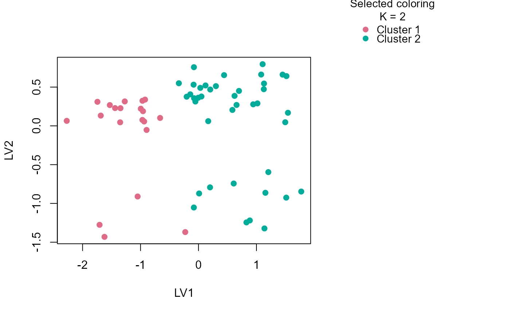

Draws a low-dimensional scatter plot from the mixed-latent view stored in a
fitted uccdf object.
Arguments
- fit
A fitted object from
fit_uccdf().- dims
Two latent dimensions to plot.
- color_by
Either
"auto","selected", or"exploratory".- show_labels
Logical; if
TRUE, draw row labels.- ...
Additional arguments passed to
graphics::plot().
Examples
fit <- fit_uccdf(toy_mixed_data, id_column = "sample_id", n_resamples = 8, n_null = 39, seed = 1)
plot_embedding(fit)
